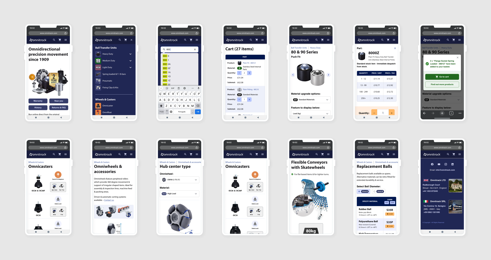

Overview
I designed the new version of Omnitrack's website, creating a lighter and more intuitive interface with a focus on user experience. The client asked me to follow the identity I had created for their PDF catalogue.
Omnitrack's website is a highly complex e-commerce that sells industrial products worldwide. Each product has multiple different technical characteristics, so most product pages needed their own particularities.
In addition to the design work, I also managed the technology team responsible for implementing the solution.
I spent two weeks working full-time at Omnitrack's office in England, then a month at their office in Italy (12/2022). I finished the project remotely from Brazil (02/2023 – 08/2023). We launched the website in April 2023.
Check out the final result at omnitrack.com.


Design system
Following the identity I created for Omnitrack's PDF catalogue, I built a design system in Figma covering colors, typography, and reusable components — giving the website a consistent visual language and speeding up handoff to the development team.
Web version
I used Figma to design and prototype the desktop experience — from the homepage down to each product's technical specification tables, ball transfer unit selectors, and material comparison charts.
Pages: before / after
A look at how key pages changed from the previous website to the new design.
Mobile version
The website also needed to work well on mobile, translating the same catalogue depth — filters, technical tables, and material options — into a smaller screen without losing clarity.
